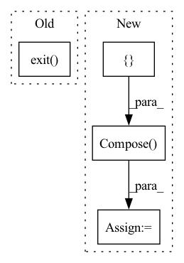

Pattern ID :27486

Before Change
def get_loader(root_dir, label_file, batch_size, img_size=0, num_thread=4, pin=True, test=False, split="train"):
if test is False:
print("Not implemented the dataloader for training")
exit()
else:
transform = transforms.Compose([
transforms.Resize((400, 400)),
transforms.ToTensor(),
After Change
def get_loader(root_dir, label_file, batch_size, img_size=0, num_thread=4, pin=True, test=False, split="train"):
if test is False:
transform = transforms.Compose([
// transforms.Resize((400, 400)),// Not used for current version.
transforms.ToTensor(),
transforms.Normalize(mean=[0.485, 0.456, 0.406], std=[0.229, 0.224, 0.225])
])
dataset = SemanLineDataset(root_dir, label_file, transform=transform, t_transform=None, split=split)
else:
transform = transforms.Compose([
transforms.Resize((400, 400)),
In pattern: SUPERPATTERN
Frequency: 3
Non-data size: 4
Instances
Fragment ID: 81588798
Project Name: hanqer/deep-hough-transform
Commit Name: ae52619a1019ee86f5dd75189215d0a98047b14c
Time: 2021-04-07
Author: hqer@foxmail.com
File Name: dataloader.py
M Class Name: AnonimousClass
N Class Name: AnonimousClass
M Method Name: get_loader(8)
N Method Name: get_loader(8)
M Parent Class:
N Parent Class:
M File Name: dataloader.py
N File Name: dataloader.py
M Start Line: 35
M End Line: 36
N Start Line: 67
N End Line: 72
'>
Before Change
T.wrapper(cyclegan.transform.Translation)(netG_S2T, device),
])
train_source_dataset.translate(transform, args.translated_root)
exit(0)
// define loss function
criterion_gan = cyclegan.LeastSquaresGenerativeAdversarialLoss()
criterion_cycle = nn.L1Loss()
After Change
)
if args.translated_root is not None:
transform = T.Compose([
T.Resize(image_size=args.test_input_size),
T.wrapper(cyclegan.transform.Translation)(netG_S2T, device),
])
train_source_dataset.translate(transform, args.translated_root)
logger.close()
'>
Fragment ID: 81588799
Project Name: thuml/transfer-learning-library
Commit Name: b23944c9c0af796efabd737c4c6cd5b8df33897c
Time: 2021-02-28
Author: 13126830206@163.com
File Name: examples-da/segmentation/cycle_gan.py
M Class Name: AnonimousClass
N Class Name: AnonimousClass
M Method Name: main(1)
N Method Name: main(1)
M Parent Class:
N Parent Class:
M File Name: examples-da/segmentation/cycle_gan.py
N File Name: examples-da/segmentation/cycle_gan.py
M Start Line: 102
M End Line: 102
N Start Line: 53
N End Line: 160
'>
Before Change
T.wrapper(cyclegan.transform.Translation)(netG_S2T, device),
])
train_source_dataset.translate(transform, args.translated_root)
exit(0)
// define loss function
criterion_gan = cyclegan.LeastSquaresGenerativeAdversarialLoss()
criterion_cycle = nn.L1Loss()
After Change
)
if args.translated_root is not None:
transform = T.Compose([
T.Resize(image_size=args.test_input_size),
T.wrapper(cyclegan.transform.Translation)(netG_S2T, device),
])
train_source_dataset.translate(transform, args.translated_root)
logger.close()
'>
Fragment ID: 81588800
Project Name: thuml/transfer-learning-library
Commit Name: b23944c9c0af796efabd737c4c6cd5b8df33897c
Time: 2021-02-28
Author: 13126830206@163.com
File Name: examples-da/segmentation/cycada.py
M Class Name: AnonimousClass
N Class Name: AnonimousClass
M Method Name: main(1)
N Method Name: main(1)
M Parent Class:
N Parent Class:
M File Name: examples-da/segmentation/cycada.py
N File Name: examples-da/segmentation/cycada.py
M Start Line: 103
M End Line: 122
N Start Line: 55
N End Line: 190